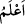
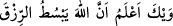

değersizliğe binâen değil.
“
(demek ki)” kelimesi, Basralılara göre “ ” ve “
”den mürekkeptir ve “ ”
taaccüp için kullanılır. Bu, birisinin merhamet ve şaşkınlıktan bir başkasına “Senin bu
yaptığın nedir?” demesi gibidir.
Râğıb Isfahânî de der ki: “
” bir kelimedir ki onunla hasret, nedâmet, hayret ve
şaşkınlık dile getirilir. Şöyle dersin: “
(Abdullah’a hayret doğrusu!)”
“
” ise teşbih içindir. Takdiri şöyledir: “Demek ki, Allah rızkı, kullarından
dilediğine bol veriyor, dilediğine de az.” Hal ve durum ne kadar da benzerdir ki, Allah
rızkı dilediğine genişletir, dilediğine daraltır. Kûfelilere göre ise; “
(demek ki)”
kelimesi, “
(yazık sana, vâh vâh)” mânâsına gelen “
” ile “ ” ve muzmar olan “
” fiilinden mürekkeptir. Takdiri şöyledir: “
(yazık sana; bildim
ki, Allah rızkı dilediğine genişletir)” Bu kelime; hata, yanılgı ve pişmanlığa dikkat
çekmek için kullanılır. Onlar bu sözleriyle bu temennîlerinde yanıldıklarına dikkat
çektiler ve buna pişmanlık duydular, demektir.
“Şâyet Allah bize” dünyadan temennî ettiğimiz şeyleri (malı) vermeyerek “lütufta
bulunmuş olmasaydı,” Kârûn’un batırılmasına sebep olan kibir, azgınlık ve taşkınlık
gibi helâk ve azâb sebepleri bizde de yeterince bulunacağı için “bizi de yerin dibine
geçirirdi.”
“Vay! Demek ki” Allah’ın nimetlerini ya da O’nun peygamberlerini ve vaadettkileri
âhiret sevabını yalanlayan “inkârcılar iflâh olmazmış!” Allah’ın azâbından
kurtulamazmış! demeye başladılar.”
Keşfü’l-esrâr’da der ki: Dünya sevgisi, Kârûn’u dünya malını toplamağa sevketti. Bu
da onu, kavmine karşı taşkınlık yapmağa ve azgınlığa götürdü. Böylece malının çokluğu
helâk olmasının yegâne sebebi oldu. Haberde varid olmuştur ki: “Dünya sevgisi her
hatânın başıdır.”[149] Dünya sevgisi bütün günahların başı, her fitnenin esası, tüm
fesadın köküdür. Kim Allah’tan uzak kalmışsa, dünya sevgisi sebebiyledir. Dünya,
geçilmesi gerekli bir köprü, kat, edilmesi gereken bir alandır. İddiâcıların lâfazanlık
mekânı, Allah korkusu olmayanların toplandığı saray, devletsizlerin sermayesi,
bedbahtların oturdukları yer, soysuzların mâşûkası, cimrilerin kıblesi, vefasız dost ve
şefkatsiz dadıdır. Örtüsüz bir güzelliğe sâhiptir, gidişatı yanlıştır. Toprak altında senin
gibi yüz binlerce dostu vardır. Yüksek bir tepeye, dolandırıcılık için oturmuş, şek ve
şüphe penceresinden dışarı bakıp sana şöyle demektedir:
Ben sen gibi bin âşığı kederden öldürdüm
Ama parmağım kimsenin kanına bulanmadı
Hz. Peygamber şöyle buyurdu: “Dünyaya gelen bir kimse misafir gibidir. Elindeki
ödünç, kendisi geçici ve ödünç aldığı şeyler ise geri iâde edilecektir.” Bir başka
rivâyette ise: “Sizin dünyada misafir gibisiniz. Ellerinde sâhip olduklarınız da size